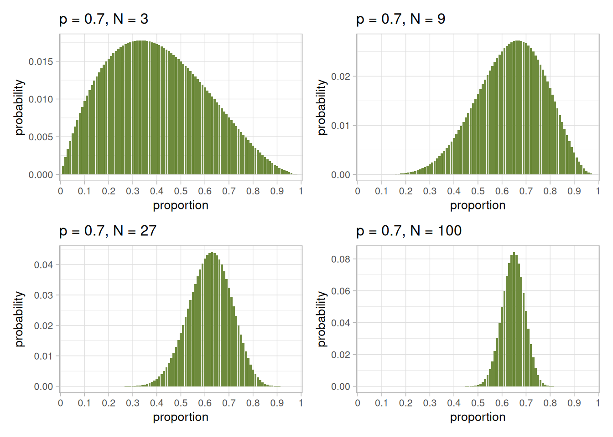

We’re attempting to estimate the proportion of the Earth’s surface that is covered with water, \(p\). We have decided to run an experiment where we sample random points on the surface of the globe to see whether they are “water” (W) or “land” (L), and we have been working with a sample of ten observations:
L W L L W W W L W W
By using Tetrahedron Earth, Icosahedron Earth and some R code, we have seen that changing our model representation of the Earth from a shape with four sides to a shape with 20 sides (to a shape with 100 faces), we can make a trade-off between the precision of our estimate of the most likely value of \(p\), and the uncertainty we have that it is the most likely possible value.
In this chapter, we are going to see what kind of effect varying the number of observations we make has on our estimated distribution of of \(p\).
9.1 Generative Simulation
To allow us to answer this question, we’re going to use a technique common in modern experimental design: Generative Simulation.
In Generative Simulation, we use our understanding of the system we’re studying, as encoded in the diagram in Figure 6.2. That figure tells us that the observations we make of the counts in \(W\) and \(L\) are influenced (only) by the value of \(p\), and the number of samples we draw.
Note
For your own experiments, the relationships between causes, effects, and measurements are likely to be more complex and involved than this example, but the principle is the same:
Draw a graph describing your understanding of the causal model of the experiment
Use this understanding, and your assumptions about how values are related, to create a generative simulation
Use the generative simulation to understand possible behaviours of your experiment
This is particularly valuable because you can test candidate analysis techniques, and sample sizes, to aid in the practical design of your experiment, by modifying the simulation.
9.1.1 Simulating replicate experiments
We will write some R code (below) to simulate tossing a globe and sampling points on the globe as “water” (W) or “land” (L).
Important
The simulation code allows us to set a “true” underlying value for \(p\). In a real experiment, we do not know the actual value of \(p\); this code lets us see how well we estimate a “true,” known value.
Show the code
# Simulate tossing a globe, with proportion of surface water p, N times# Adapted from Statistical Rethinking by Richard McElreath# (https://www.youtube.com/watch?v=R1vcdhPBlXA)# By default, the proportion of water is set to 70% (0.7), and we draw nine samplessimulate <-function( p =0.7, N =9 ) {sample(c("W", "L"), size=N, replace=TRUE, prob=c(p, 1-p))}# Simulate five default drawsruns =5defaults <-data.frame(run=seq(runs),draw=replicate(runs, toString(simulate())))# Show tabledefaults |>kbl(format="html", align="c") |>kable_styling(bootstrap_options =c("striped", "hover"), full_width = F)
Table 9.1: Generative simulation of five draws with \(p = 0.7\) and making nine observations.
run
draw
1
L, L, L, L, W, W, W, W, L
2
L, W, W, L, W, W, W, W, W
3
W, L, W, W, L, L, W, W, W
4
W, W, W, L, W, W, W, W, W
5
L, L, W, W, L, W, L, L, W
Table 9.1 gives us five different sets of nine observations, for the same underlying proportion of water on the Earth’s surface.
9.1.2 Simulating extreme possibilities
Tip
A major advantage of this approach is that we can simulate extreme situations - such as an Earth with no water, or no land (Table 9.2) - or any potential combination of values of the influences that we have included in our causal model.
Show the code
# Simulate five default drawsruns =c("No water", "No land")draws =c(toString(simulate(p=0)),toString(simulate(p=1)))extremes <-data.frame(run=runs,draw=draws)# Show tableextremes |>kbl(format="html", align="c") |>kable_styling(bootstrap_options =c("striped", "hover"), full_width = F)
Table 9.2: Generative simulation of draws from Earths with no water, and no land.
run
draw
No water
L, L, L, L, L, L, L, L, L
No land
W, W, W, W, W, W, W, W, W
9.1.3 A range of sample sizes
We can examine the effect of sampling different numbers of points on the globe, using the same code (see below and Table 9.3).
9.2 What effect does the number of observations have?
Armed with our generative simulation code, we simulate individual experiments with 3, 9, 27, and 100 observations, plotting the results in Figure 9.1.
Show the code
# Generate plots of posterior distributions, with differing numbers of# sample observations for eachp1 <-plot_distn(simulate(N =3)) +ggtitle("p = 0.7, N = 3")p2 <-plot_distn(simulate(N =9)) +ggtitle("p = 0.7, N = 9")p3 <-plot_distn(simulate(N =27)) +ggtitle("p = 0.7, N = 27")p4 <-plot_distn(simulate(N =100)) +ggtitle("p = 0.7, N = 100")# Use patchwork to layout the figuresp1 + p2 + p3 + p4

Figure 9.1: Posterior distributions of estimates of \(p\), the proportion of the globe that is water, from four single runs of sampling with \(N\)=3, 9, 27, 100, 500, and 1000 observations. In these simulations, the model Earth has 100 faces and the known proportion is \(p = 0.7\). As the number of samples increases, the modal estimate centres closer to the true value of \(p = 0.7\), and the spread of the distribution narrows.
We can see visually from Figure 9.1 that varying the number of samples we take has two effects:
With only three samples, the most likely estimate for \(p\) is some way from the true value of \(p = 0.7\). Increasing the number of samples moves the predicted most likely value closer to the true value.
As we increase the number of samples from 9 to 100, the distribution of our estimate remains centred on \(p = 0.7\), but the width of the distribution narrows. Within the distributions, the probability of the most likely estimate also increases: we become more certain about our best estimate(s), and the range of plausible estimates gets smaller.
9.3 Summary
Important
Sample size is a central concern of experimental design in general.
Collecting too few observations leads to increased uncertainty in our estimated values
This uncertainty can make it more difficult to achieve a statistically convincing result
Collecting too many observations consumes time, resources, and money
Funding and researcher time is limited for experiments
Collecting an optimal number of observations provides statisticaly robust results at a reasonable cost
Note
Sample size is a particular concern in animal experiments, because there is an additional concern to reduce or eliminate animal suffering.
As is the case for all experiments, we want to choose a sample size that is large enough, so we can estimate quantities accurately enough and with enough precision that our statistical analysis is informative.
But in addition, we need to choose the smallest possible sample size that allows this, in order to minimise the ethical cost of the experiment, in terms of animal suffering.
In the next section, we will discuss how it is possible to calculate an optimal number of observations/experimental units, to ensure robust statistical analysis and minimise ethical and financial costs.